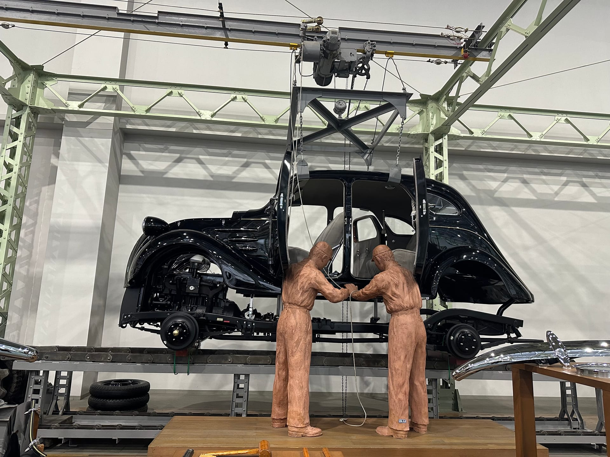
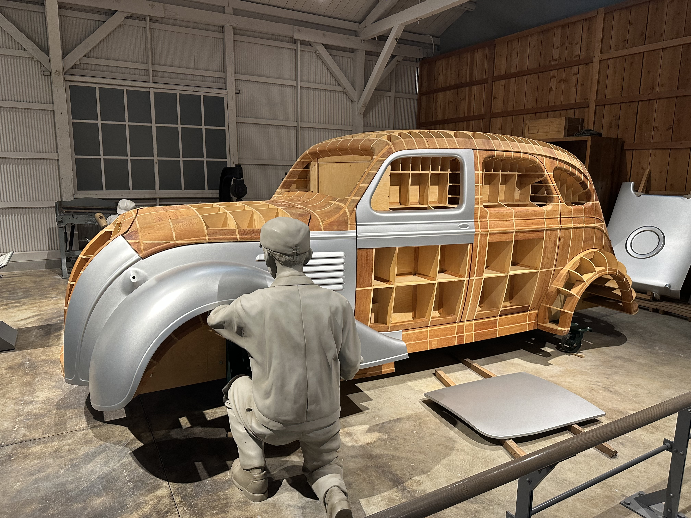
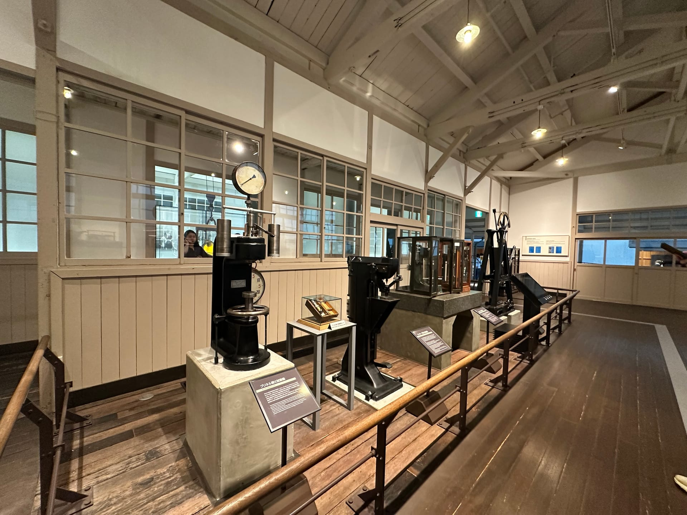
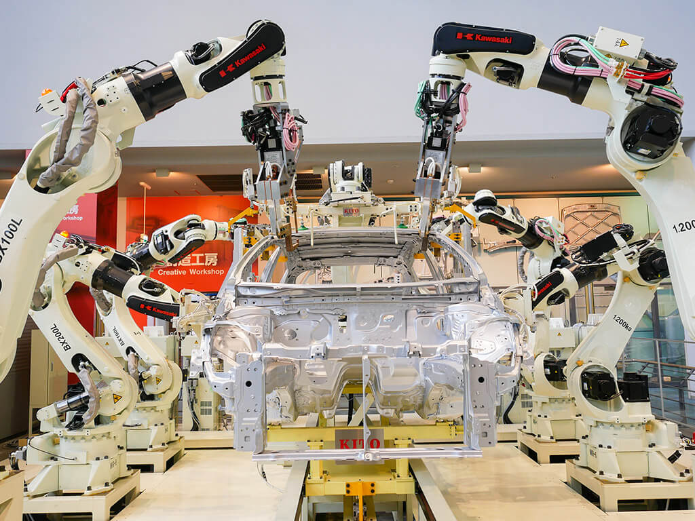

From Looms to Cars: The Power of Disruptive Transition
從織布機到汽車：破壞式轉向的力量
How Toyota's transition from textiles to automobiles reveals the true nature of disruptive innovation

At the Toyota Commemorative Museum of Industry and Technology, the exhibition transitions from textiles to automobiles. This shift isn't abrupt — it's a thoughtful continuation. From cotton and yarn to steel and engines, the core story remains the same: understanding materials and redefining how things are made.

One section shows how early car bodies were made. Factories at the time built wooden molds, known as bucks, and workers hand-hammered metal sheets over them to form the curves. Each panel was then checked against the mold for accuracy and alignment. This process maintained consistent shapes, but still relied heavily on skill and time — completing a single car body could take weeks.

What set cars apart from looms was complexity. A car contains hundreds, even thousands of parts. A small dimensional error in one component could magnify during assembly. When Toyota began thinking about how to make cars accessible to the public, automation and systemization became the only answers.
The museum shows this transformation: large casting presses, welding robots, and conveyor-based assembly lines — symbols of a new manufacturing logic. In the early years, Toyota imported machinery from Europe and the U.S., but they didn't adopt it blindly. Instead, they integrated decades of craftsmanship — intuition about material flexibility, an understanding of process order — into the new mechanical systems, embedding human wisdom inside machines.

The final section recreates a modern automotive plant: a dozen robotic arms moving in perfect rhythm behind safety barriers, welding, transporting, and assembling.
To most visitors, it's an impressive sight. But I know that behind those two minutes of seamless motion lie countless rounds of research, testing, and coordination. Each robotic gesture has been calibrated — a one-degree misalignment could throw off a weld; a millisecond delay could disrupt not just a product's quality, but the entire production rhythm of the factory.
At that moment, what I felt wasn't "machines replacing humans," but human experience being translated into the language of machines. The precision built over years of craftsmanship — the sense of material, the rhythm of movement — had become part of an automated system. Without craftsmen, such systems would not exist. There would be no stability without understanding.
From textiles to automobiles, from handcraft to automation, Toyota demonstrates what true disruptive innovation means. Disruption isn't about destroying the old — it's about extracting what's essential, and translating it into a new domain where it can live on.
Leave a Comment
留言
Share your thoughts and join the discussion
分享您的想法並參與討論